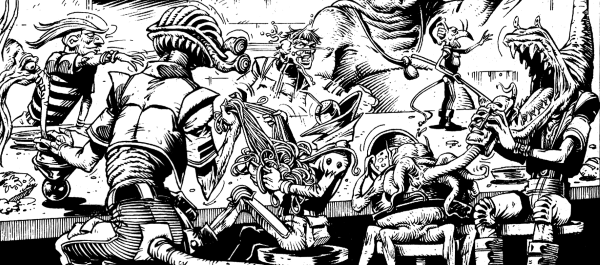

It's sort of Ace Trucking Co. minus the fun, as it focusses too strongly on boardroom politics.
Art by Massimo Belardinelli
| Story Title | Parts | Pages | w indicates a wraparound coverCovers | Year(s) | Issues | Writer | Artist | Colourist | Letterer |
|---|---|---|---|---|---|---|---|---|---|
| Moon Runners | 15 | 77 | 591: Massimo Belardinelli 603: Massimo Belardinelli 2 | 1988 | 591-604, 607 | Alan McKenzie Steve Parkhousevarious | Massimo Belardinelli | [b&w] | Annie Parkhouse |
| A Prologue: Out of the Past | 1 | 8 | 0 | 1989 | SFS12 | Alan McKenzie | Massimo Belardinelli | [greyscale] | Gordon Robson |
| Old Aquaintance | 4 | 22 | 0 | 1989 | 641-644 | Alan McKenzie | Massimo Belardinelli | [b&w] | Jack Potter |
| Pirate | 1 | 8 | 0 | 1989 | 2KA'90 | Alan McKenzie | Massimo Belardinelli | <-- | Gordon Robson |
| The Homecoming | 1 | 8 | 0 | 1990 | 2KA'91 | Alan McKenzie | Massimo Belardinelli | <-- | Gordon Robson |
| >> Posters << | |||||||||
Supertitled: "Net Scan".Spirit of St Louis, Cara Nash & Flynn | 1 | 1 | 0 | 1989 | 617 | n/a | Massimo Belardinelli | <-- | n/a |
Supertitled: "Net Scan".Flynn | 1 | 1 | 0 | 1989 | 618 | n/a | Massimo Belardinelli | <-- | n/a |
Supertitled: "Net Scan".Cara Nash | 1 | 1 | 0 | 1989 | 619 | n/a | Massimo Belardinelli | <-- | n/a |
Supertitled: "Net Scan".Carol Nash | 1 | 1 | 0 | 1989 | 620 | n/a | Massimo Belardinelli | <-- | n/a |
Supertitled: "Net Scan".Kempo | 1 | 1 | 0 | 1989 | 621 | n/a | Massimo Belardinelli | <-- | n/a |
Supertitled: "Net Scan".Goethe, Cog & Doppler | 1 | 1 | 0 | 1989 | 622 | n/a | Massimo Belardinelli | <-- | n/a |
Star Scan.[Spirit of St Louis] | 1 | 1 | 0 | 1989 | 641 | n/a | Massimo Belardinelli | <-- | n/a |
From 2000 AD Art‑FileMoon Runners | 1 | 1 | 0 | 1990 | 661 | n/a | Massimo Belardinelli | <-- | n/a |
| year | episodes | pages |
| 1979 | 0 | 0 |
| 1980 | 0 | 0 |
| 1981 | 0 | 0 |
| 1982 | 0 | 0 |
| 1983 | 0 | 0 |
| 1984 | 0 | 0 |
| 1985 | 0 | 0 |
| 1986 | 0 | 0 |
| 1987 | 0 | 0 |
| 1988 | 15 | 77 |
| 1989 | 6 | 38 |
| 1990 | 1 | 8 |
| 1991 | 0 | 0 |
| 1992 | 0 | 0 |
| 1993 | 0 | 0 |
| 1994 | 0 | 0 |
| 1995 | 0 | 0 |
| 1996 | 0 | 0 |
| 1997 | 0 | 0 |
| 1998 | 0 | 0 |
| 1999 | 0 | 0 |
Comic strip data (excludes other content):